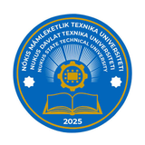
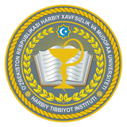
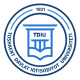
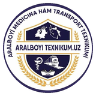
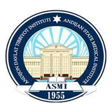
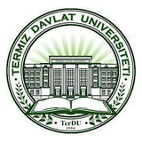

Bitiruvchilar
So‘nggi to‘rt yilda maktabimizni 141 nafar o‘quvchi bitirdi. Ulardan 131 nafari oliygohlarda, 6 nafari texnikumlarda o‘qimoqda.
Yillar bo‘yicha
- Oliygoh
- Texnikum
- Ko‘rsatilmagan
Bitiruvchilarning sertifikatlari
Kuchli natijalar — yaxshi oliygohlarga yo‘l.
O‘sish
Sertifikatli bitiruvchilar
Qoraqalpog‘istondan tashqarida o‘qiydiganlar
Tibbiyot va muhandislik/IT
Tibbiyot
10 ta muassasada
 Qoraqalpog‘iston tibbiyot instituti4
Qoraqalpog‘iston tibbiyot instituti4 Abu Ali ibn Sino nomidagi 2-son Nukus jamoat salomatligi texnikumi2
Abu Ali ibn Sino nomidagi 2-son Nukus jamoat salomatligi texnikumi2 Urganch davlat tibbiyot instituti2
Urganch davlat tibbiyot instituti2
Muhandislik va IT
8 ta muassasada

Nukus davlat texnika universiteti5 Berdaq nomidagi Qoraqalpoq davlat universiteti5
Berdaq nomidagi Qoraqalpoq davlat universiteti5 Qoraqalpog‘iston qishloq xo‘jaligi va agrotexnologiyalar instituti1
Qoraqalpog‘iston qishloq xo‘jaligi va agrotexnologiyalar instituti1
Yil bo‘yicha ko‘rish
Qayerda o‘qimoqda
- Berdaq nomidagi Qoraqalpoq davlat universitetiNukus62
 Ajiniyoz nomidagi Nukus davlat pedagogika institutiNukus12
Ajiniyoz nomidagi Nukus davlat pedagogika institutiNukus12- Nukus davlat texnika universitetiNukus10
 Nukus innovatsion institutiNukus4
Nukus innovatsion institutiNukus4 O‘zbekiston davlat jahon tillari universitetiToshkent4
O‘zbekiston davlat jahon tillari universitetiToshkent4- Qoraqalpog‘iston tibbiyot institutiNukus4
- Qoraqalpog‘iston qishloq xo‘jaligi va agrotexnologiyalar institutiNukus3

Harbiy xavfsizlik va mudofaa universitetiToshkent3
Barcha 34 ta muassasa
 Innovatsion texnologiyalar universitetiNukus3
Innovatsion texnologiyalar universitetiNukus3 O‘zbekiston davlat san’at va madaniyat instituti Nukus filialiNukus2
O‘zbekiston davlat san’at va madaniyat instituti Nukus filialiNukus2 Navoiy davlat universitetiNavoiy2
Navoiy davlat universitetiNavoiy2- Abu Ali ibn Sino nomidagi 2-son Nukus jamoat salomatligi texnikumi texnikumNukus2

Toshkent davlat iqtisodiyot universitetiToshkent2- Urganch davlat tibbiyot institutiUrganch2
 Toshkent davlat tibbiyot universiteti Chirchiq filialiToshkent2
Toshkent davlat tibbiyot universiteti Chirchiq filialiToshkent2
Orolbo‘yi tibbiyot va transport texnikumi texnikumNukus2 O‘zbekiston davlat san’at va madaniyat institutiToshkent1
O‘zbekiston davlat san’at va madaniyat institutiToshkent1- University of Business and Science Toshkent filialiToshkent1
- Kegeyli tumani 3-sonli texnikumi texnikumKegeyli1
 MIFI milliy tadqiqot yadro universiteti Toshkent filialiToshkent1
MIFI milliy tadqiqot yadro universiteti Toshkent filialiToshkent1 Muhammad al-Xorazmiy nomidagi Toshkent axborot texnologiyalari universitetiToshkent1
Muhammad al-Xorazmiy nomidagi Toshkent axborot texnologiyalari universitetiToshkent1 Mirzo Ulug‘bek nomidagi O‘zbekiston Milliy universitetiToshkent1
Mirzo Ulug‘bek nomidagi O‘zbekiston Milliy universitetiToshkent1 Samarqand davlat tibbiyot universitetiSamarqand1
Samarqand davlat tibbiyot universitetiSamarqand1 Yangi O‘zbekiston universitetiToshkent1
Yangi O‘zbekiston universitetiToshkent1- Abu Ali ibn Sino nomidagi 1-son Nukus jamoat salomatligi texnikumi texnikumNukus1
 «Cyber University» davlat universitetiToshkent1
«Cyber University» davlat universitetiToshkent1 Qarshi davlat universitetiQarshi1
Qarshi davlat universitetiQarshi1
Andijon davlat tibbiyot institutiAndijon1 Samarqand veterinariya meditsinasi, chorvachilik va biotexnologiyalar universiteti Nukus filialiNukus1
Samarqand veterinariya meditsinasi, chorvachilik va biotexnologiyalar universiteti Nukus filialiNukus1 Samarqand davlat pedagogika institutiSamarqand1
Samarqand davlat pedagogika institutiSamarqand1 Namangan davlat universitetiNamangan1
Namangan davlat universitetiNamangan1 Abu Rayhon Beruniy nomidagi Urganch davlat universitetiUrganch1
Abu Rayhon Beruniy nomidagi Urganch davlat universitetiUrganch1 RANCH texnologiya universiteti Nukus kampusiNukus1
RANCH texnologiya universiteti Nukus kampusiNukus1
Termiz davlat universitetiTermiz1
Tanlangan yo‘nalishlar
- Iqtisodiyot va biznes30 · 22%
- Tillar va filologiya23 · 17%
- Matematika va tabiiy fanlar20 · 15%
- Tibbiyot17 · 12%
- Muhandislik va IT16 · 12%
- Huquq, tarix va ijtimoiy fanlar15 · 11%
- Pedagogika va psixologiya13 · 9%
- Harbiy3 · 2%
O‘zbekiston bo‘ylab
29 nafar bitiruvchi Qoraqalpog‘istondan tashqaridagi oliygohlarda o‘qimoqda.
Qoraqalpog‘istondan tashqaridagi oliygohlar
Qayerda o‘qimoqda
- Berdaq nomidagi Qoraqalpoq davlat universitetiNukus5
- Nukus davlat texnika universitetiNukus4
- O‘zbekiston davlat san’at va madaniyat instituti Nukus filialiNukus1
- Navoiy davlat universitetiNavoiy1
- Abu Ali ibn Sino nomidagi 2-son Nukus jamoat salomatligi texnikumi texnikumNukus1
- O‘zbekiston davlat san’at va madaniyat institutiToshkent1
- Ajiniyoz nomidagi Nukus davlat pedagogika institutiNukus1
Tanlangan yo‘nalishlar
- Muhandislik va IT4 · 29%
- Iqtisodiyot va biznes3 · 21%
- Huquq, tarix va ijtimoiy fanlar2 · 14%
- Matematika va tabiiy fanlar2 · 14%
- Pedagogika va psixologiya1 · 7%
- Tibbiyot1 · 7%
- Tillar va filologiya1 · 7%
O‘zbekiston bo‘ylab
2 nafar bitiruvchi Qoraqalpog‘istondan tashqaridagi oliygohlarda o‘qimoqda.
Qoraqalpog‘istondan tashqaridagi oliygohlar
Qayerda o‘qimoqda
- Berdaq nomidagi Qoraqalpoq davlat universitetiNukus12
- Ajiniyoz nomidagi Nukus davlat pedagogika institutiNukus5
- Nukus innovatsion institutiNukus4
- Qoraqalpog‘iston qishloq xo‘jaligi va agrotexnologiyalar institutiNukus2
- Toshkent davlat iqtisodiyot universitetiToshkent1
- Harbiy xavfsizlik va mudofaa universitetiToshkent1
- O‘zbekiston davlat jahon tillari universitetiToshkent1
- Urganch davlat tibbiyot institutiUrganch1
Barcha 12 ta muassasa
- University of Business and Science Toshkent filialiToshkent1
- Navoiy davlat universitetiNavoiy1
- Nukus davlat texnika universitetiNukus1
- Kegeyli tumani 3-sonli texnikumi texnikumKegeyli1
Tanlangan yo‘nalishlar
- Pedagogika va psixologiya6 · 19%
- Matematika va tabiiy fanlar6 · 19%
- Iqtisodiyot va biznes5 · 16%
- Muhandislik va IT5 · 16%
- Huquq, tarix va ijtimoiy fanlar3 · 10%
- Tibbiyot3 · 10%
- Tillar va filologiya2 · 6%
- Harbiy1 · 3%
O‘zbekiston bo‘ylab
6 nafar bitiruvchi Qoraqalpog‘istondan tashqaridagi oliygohlarda o‘qimoqda.
Qoraqalpog‘istondan tashqaridagi oliygohlar
Qayerda o‘qimoqda
- Berdaq nomidagi Qoraqalpoq davlat universitetiNukus20
- Qoraqalpog‘iston tibbiyot institutiNukus2
- Harbiy xavfsizlik va mudofaa universitetiToshkent2
- Orolbo‘yi tibbiyot va transport texnikumi texnikumNukus2
- MIFI milliy tadqiqot yadro universiteti Toshkent filialiToshkent1
- Toshkent davlat iqtisodiyot universitetiToshkent1
- Toshkent davlat tibbiyot universiteti Chirchiq filialiToshkent1
- O‘zbekiston davlat jahon tillari universitetiToshkent1
Barcha 17 ta muassasa
- Muhammad al-Xorazmiy nomidagi Toshkent axborot texnologiyalari universitetiToshkent1
- Mirzo Ulug‘bek nomidagi O‘zbekiston Milliy universitetiToshkent1
- Samarqand davlat tibbiyot universitetiSamarqand1
- Ajiniyoz nomidagi Nukus davlat pedagogika institutiNukus1
- Yangi O‘zbekiston universitetiToshkent1
- Qoraqalpog‘iston qishloq xo‘jaligi va agrotexnologiyalar institutiNukus1
- Innovatsion texnologiyalar universitetiNukus1
- Abu Ali ibn Sino nomidagi 1-son Nukus jamoat salomatligi texnikumi texnikumNukus1
- Abu Ali ibn Sino nomidagi 2-son Nukus jamoat salomatligi texnikumi texnikumNukus1
Tanlangan yo‘nalishlar
- Tibbiyot8 · 21%
- Iqtisodiyot va biznes7 · 18%
- Tillar va filologiya7 · 18%
- Matematika va tabiiy fanlar5 · 13%
- Huquq, tarix va ijtimoiy fanlar4 · 10%
- Muhandislik va IT3 · 8%
- Pedagogika va psixologiya3 · 8%
- Harbiy2 · 5%
O‘zbekiston bo‘ylab
10 nafar bitiruvchi Qoraqalpog‘istondan tashqaridagi oliygohlarda o‘qimoqda.
Qoraqalpog‘istondan tashqaridagi oliygohlar
Qayerda o‘qimoqda
- Berdaq nomidagi Qoraqalpoq davlat universitetiNukus25
- Nukus davlat texnika universitetiNukus5
- Ajiniyoz nomidagi Nukus davlat pedagogika institutiNukus5
- Qoraqalpog‘iston tibbiyot institutiNukus2
- O‘zbekiston davlat jahon tillari universitetiToshkent2
- Innovatsion texnologiyalar universitetiNukus2
- «Cyber University» davlat universitetiToshkent1
- Qarshi davlat universitetiQarshi1
Barcha 18 ta muassasa
- Andijon davlat tibbiyot institutiAndijon1
- Samarqand veterinariya meditsinasi, chorvachilik va biotexnologiyalar universiteti Nukus filialiNukus1
- Samarqand davlat pedagogika institutiSamarqand1
- Namangan davlat universitetiNamangan1
- Abu Rayhon Beruniy nomidagi Urganch davlat universitetiUrganch1
- O‘zbekiston davlat san’at va madaniyat instituti Nukus filialiNukus1
- Toshkent davlat tibbiyot universiteti Chirchiq filialiToshkent1
- RANCH texnologiya universiteti Nukus kampusiNukus1
- Urganch davlat tibbiyot institutiUrganch1
- Termiz davlat universitetiTermiz1
Tanlangan yo‘nalishlar
- Iqtisodiyot va biznes15 · 28%
- Tillar va filologiya13 · 25%
- Matematika va tabiiy fanlar7 · 13%
- Huquq, tarix va ijtimoiy fanlar6 · 11%
- Tibbiyot5 · 9%
- Muhandislik va IT4 · 8%
- Pedagogika va psixologiya3 · 6%
O‘zbekiston bo‘ylab
11 nafar bitiruvchi Qoraqalpog‘istondan tashqaridagi oliygohlarda o‘qimoqda.
Qoraqalpog‘istondan tashqaridagi oliygohlar
Yo‘lingni tanla
Qaysi yo‘nalish qiziqtiradi? Bitiruvchilarimiz qayerda o‘qiyotganini ko‘ring.
Qayerda o‘qiydi
va yana 2 ta oliygoh/texnikum
Yillar bo‘yicha
Shaharlar
Qanday sertifikatlari bor edi
27 nafar bitiruvchidan 25 tasida kamida bitta sertifikat bor edi
Sertifikat ma’lumotlari 2023–2026 yillar bitiruvchilari uchun. Bitiruvchida bir nechta fandan sertifikat bo‘lishi mumkin.
Qayerda o‘qiydi
Yillar bo‘yicha
Shaharlar
Qanday sertifikatlari bor edi
22 nafar bitiruvchidan 22 tasida kamida bitta sertifikat bor edi
Sertifikat ma’lumotlari 2023–2026 yillar bitiruvchilari uchun. Bitiruvchida bir nechta fandan sertifikat bo‘lishi mumkin.
Qayerda o‘qiydi
Yillar bo‘yicha
Shaharlar
Qanday sertifikatlari bor edi
18 nafar bitiruvchidan 8 tasida kamida bitta sertifikat bor edi
Sertifikat ma’lumotlari 2023–2026 yillar bitiruvchilari uchun. Bitiruvchida bir nechta fandan sertifikat bo‘lishi mumkin.
Qayerda o‘qiydi
va yana 5 ta oliygoh/texnikum
Yillar bo‘yicha
Shaharlar
Qanday sertifikatlari bor edi
16 nafar bitiruvchidan 8 tasida kamida bitta sertifikat bor edi
Sertifikat ma’lumotlari 2023–2026 yillar bitiruvchilari uchun. Bitiruvchida bir nechta fandan sertifikat bo‘lishi mumkin.
Qayerda o‘qiydi
va yana 3 ta oliygoh/texnikum
Yillar bo‘yicha
Shaharlar
Qanday sertifikatlari bor edi
12 nafar bitiruvchidan 5 tasida kamida bitta sertifikat bor edi
Sertifikat ma’lumotlari 2023–2026 yillar bitiruvchilari uchun. Bitiruvchida bir nechta fandan sertifikat bo‘lishi mumkin.
Qayerda o‘qiydi
va yana 3 ta oliygoh/texnikum
Yillar bo‘yicha
Shaharlar
Qanday sertifikatlari bor edi
13 nafar bitiruvchidan 9 tasida kamida bitta sertifikat bor edi
Sertifikat ma’lumotlari 2023–2026 yillar bitiruvchilari uchun. Bitiruvchida bir nechta fandan sertifikat bo‘lishi mumkin.
Qayerda o‘qiydi
Yillar bo‘yicha
Shaharlar
Qanday sertifikatlari bor edi
12 nafar bitiruvchidan 4 tasida kamida bitta sertifikat bor edi
Sertifikat ma’lumotlari 2023–2026 yillar bitiruvchilari uchun. Bitiruvchida bir nechta fandan sertifikat bo‘lishi mumkin.
Qayerda o‘qiydi
Yillar bo‘yicha
Shaharlar
Qanday sertifikatlari bor edi
3 nafar bitiruvchidan 3 tasida kamida bitta sertifikat bor edi
Sertifikat ma’lumotlari 2023–2026 yillar bitiruvchilari uchun. Bitiruvchida bir nechta fandan sertifikat bo‘lishi mumkin.
Raqamlar bitiruvchilarimizning 2022–2026 yillardagi haqiqiy natijalaridan olingan.
Bitiruvchilar ro‘yxati
Barcha bitiruvchilarimiz va ular tahsil olayotgan joylar.
| F.I.Sh. | Oliygoh / texnikum | Yo‘nalish |
|---|---|---|
| Amanbaeva Qanzada Jubandıq qızı | O‘zbekiston davlat san’at va madaniyat instituti Nukus filialiNukus | Huquq, tarix va ijtimoiy fanlar |
| Ataxanova Nazira Nazirbay qızı | Nukus davlat texnika universitetiNukus | Muhandislik va IT |
| Baxtıbaeva Shaxnoza Maxmud qızı | Berdaq nomidagi Qoraqalpoq davlat universitetiNukus | Iqtisodiyot va biznes |
| Inyatov Azizbek Rafatdin ulı | Berdaq nomidagi Qoraqalpoq davlat universitetiNukus | Muhandislik va IT |
| Jalǵasbaeva Juldız Abatbay qızı | Nukus davlat texnika universitetiNukus | Iqtisodiyot va biznes |
| Jarılqasinova Diana Elmurza qızı | Navoiy davlat universitetiNavoiy | Pedagogika va psixologiya |
| Joldasbaeva Dilnaz Muxamatdin qızı | Abu Ali ibn Sino nomidagi 2-son Nukus jamoat salomatligi texnikumi texnikumNukus | Tibbiyot |
| Jumabaev Adilbek Azat ulı | Berdaq nomidagi Qoraqalpoq davlat universitetiNukus | Matematika va tabiiy fanlar |
| Jumaxmetov Jańabay Perdebay ulı | Berdaq nomidagi Qoraqalpoq davlat universitetiNukus | Muhandislik va IT |
| Qaypbaeva Dilaram Artıqbay qızı | O‘zbekiston davlat san’at va madaniyat institutiToshkent | Huquq, tarix va ijtimoiy fanlar |
| Shalabaeva Feruza Baxtiyar qızı | Nukus davlat texnika universitetiNukus | Muhandislik va IT |
| Sherniyazova Saltanat Quwat qızı | Ajiniyoz nomidagi Nukus davlat pedagogika institutiNukus | Matematika va tabiiy fanlar |
| Umirbaev Elbrus Ernazar ulı | Nukus davlat texnika universitetiNukus | Iqtisodiyot va biznes |
| Urazbaeva Shaxnoza Oralbay qızı | Berdaq nomidagi Qoraqalpoq davlat universitetiNukus | Tillar va filologiya |
| Allambergenova Aysara Adilbay qızı | Nukus innovatsion institutiNukus | Pedagogika va psixologiya |
| Amanbaeva Merwert Baxtiyar qızı | Qoraqalpog‘iston qishloq xo‘jaligi va agrotexnologiyalar institutiNukus | Iqtisodiyot va biznes |
| Axnazarova Altinay Qalxnazar qizi | Berdaq nomidagi Qoraqalpoq davlat universitetiNukus | Matematika va tabiiy fanlar |
| Aybarova Zarina Baxtiyar qızı | Toshkent davlat iqtisodiyot universitetiToshkent | Iqtisodiyot va biznes |
| Aytmuratov Shamshet | Qoraqalpog‘iston qishloq xo‘jaligi va agrotexnologiyalar institutiNukus | Muhandislik va IT |
| Azamatova Araylım Azamat qızı | Berdaq nomidagi Qoraqalpoq davlat universitetiNukus | Iqtisodiyot va biznes |
| Bazarbaev Jasurbek Bayrambay ulı | Berdaq nomidagi Qoraqalpoq davlat universitetiNukus | Muhandislik va IT |
| Bekbergenova Shaxnozabanu Anibek qizi | Ajiniyoz nomidagi Nukus davlat pedagogika institutiNukus | Matematika va tabiiy fanlar |
| Ernazarova Nilufar Erkinbay qızı | Ajiniyoz nomidagi Nukus davlat pedagogika institutiNukus | Pedagogika va psixologiya |
| Eshmuratova Gulferuz Jeńisbaevna | Ajiniyoz nomidagi Nukus davlat pedagogika institutiNukus | Pedagogika va psixologiya |
| Iqlasbaev Allayar Alpamisovich | Harbiy xavfsizlik va mudofaa universitetiToshkent | Harbiy |
| Jalgasbaeva Gulxumar Keunimjay qızı | Berdaq nomidagi Qoraqalpoq davlat universitetiNukus | Iqtisodiyot va biznes |
| Joldasbaeva Aysuliw | Nukus innovatsion institutiNukus | Pedagogika va psixologiya |
| Joldasbaeva Dilyanora Medetbay qızı | O‘zbekiston davlat jahon tillari universitetiToshkent | Tillar va filologiya |
| Joldasbaeva Zulfiya Dawletbay qızı | Ajiniyoz nomidagi Nukus davlat pedagogika institutiNukus | Matematika va tabiiy fanlar |
| Jumabaeva Gulbanıw Bolısbay qızı | Berdaq nomidagi Qoraqalpoq davlat universitetiNukus | Huquq, tarix va ijtimoiy fanlar |
| Kayratdinov Paxratdin Asematdiyin uli | Nukus innovatsion institutiNukus | Pedagogika va psixologiya |
| Muratbaeva Juzimgul Dawletbay qizi | Urganch davlat tibbiyot institutiUrganch | Tibbiyot |
| Nietullaeva Shaxnozabanu Najimatdin qizi | Berdaq nomidagi Qoraqalpoq davlat universitetiNukus | Matematika va tabiiy fanlar |
| Nuratdinov Sayıpbek Maxsetbay ulı | Ajiniyoz nomidagi Nukus davlat pedagogika institutiNukus | Matematika va tabiiy fanlar |
| Pirdanova Begzada | Nukus innovatsion institutiNukus | Pedagogika va psixologiya |
| Saparbaeva Gulayda Maxsetbay qızı | Berdaq nomidagi Qoraqalpoq davlat universitetiNukus | Muhandislik va IT |
| Saparniyazov Artıqbay Azirbaevich | Berdaq nomidagi Qoraqalpoq davlat universitetiNukus | Iqtisodiyot va biznes |
| Sarsenbaeva Dilfuza Baxadir qızı | Berdaq nomidagi Qoraqalpoq davlat universitetiNukus | Huquq, tarix va ijtimoiy fanlar |
| Smetullaeva Feruza Nasir qızı | Berdaq nomidagi Qoraqalpoq davlat universitetiNukus | Tillar va filologiya |
| Tajetdinova Nurzada Jaqsimbay qizi | University of Business and Science Toshkent filialiToshkent | Tibbiyot |
| Tólepbergenova Aysulıw Jalǵasbay qızı | Navoiy davlat universitetiNavoiy | Tibbiyot |
| Toreniyazova Nursuliw Tenelbay qizi | Berdaq nomidagi Qoraqalpoq davlat universitetiNukus | Matematika va tabiiy fanlar |
| Turǵanbaeva Ziyada Baxadır qızı | Berdaq nomidagi Qoraqalpoq davlat universitetiNukus | Huquq, tarix va ijtimoiy fanlar |
| Uzakbaeva Ayjamal Muzapbar qızı | Nukus davlat texnika universitetiNukus | Muhandislik va IT |
| Yusupova Umida Baxtiyar qizi | Kegeyli tumani 3-sonli texnikumi texnikumKegeyli | Muhandislik va IT |
| Abatov Edilbek Adilbekovich | MIFI milliy tadqiqot yadro universiteti Toshkent filialiToshkent | Muhandislik va IT |
| Abdullaeva Ayjamal Salamat qizi | Toshkent davlat iqtisodiyot universitetiToshkent | Iqtisodiyot va biznes |
| Allambergenov Muxammeddin Qadirbay o‘g‘li | Berdaq nomidagi Qoraqalpoq davlat universitetiNukus | Iqtisodiyot va biznes |
| Allaniyazova Gulzada Janibek qızı | Berdaq nomidagi Qoraqalpoq davlat universitetiNukus | Tillar va filologiya |
| Aymuratov Tazabay Bayrambay ulı | Qoraqalpog‘iston tibbiyot institutiNukus | Tibbiyot |
| Babaxanova Riana Matimurat qizi | Toshkent davlat tibbiyot universiteti Chirchiq filialiToshkent | Tibbiyot |
| Bazarbaeva Gulzar Muratbay qizi | O‘zbekiston davlat jahon tillari universitetiToshkent | Tillar va filologiya |
| Berdimuratova Alima Ismayil qizi | Berdaq nomidagi Qoraqalpoq davlat universitetiNukus | Huquq, tarix va ijtimoiy fanlar |
| Dawletbaeva Sayyora Saǵiydulla qizi | Berdaq nomidagi Qoraqalpoq davlat universitetiNukus | Tillar va filologiya |
| Duysenbaev Tursinbay Esenbay uli | Muhammad al-Xorazmiy nomidagi Toshkent axborot texnologiyalari universitetiToshkent | Muhandislik va IT |
| Embergenov Nurpolat Adilbay uli | Berdaq nomidagi Qoraqalpoq davlat universitetiNukus | Iqtisodiyot va biznes |
| Eshimbetova Malika Arepbay qizi | Berdaq nomidagi Qoraqalpoq davlat universitetiNukus | Matematika va tabiiy fanlar |
| Xamidullaeva Feruza Dauletovna | Mirzo Ulug‘bek nomidagi O‘zbekiston Milliy universitetiToshkent | Matematika va tabiiy fanlar |
| Iqlasbaev Nazarbek Oralbay o‘g‘li | Berdaq nomidagi Qoraqalpoq davlat universitetiNukus | Huquq, tarix va ijtimoiy fanlar |
| Ismailova Khurshida Yusupbek qızı | Berdaq nomidagi Qoraqalpoq davlat universitetiNukus | Tillar va filologiya |
| Jaksilikova Nilufar Darmenbay qızı | Berdaq nomidagi Qoraqalpoq davlat universitetiNukus | Huquq, tarix va ijtimoiy fanlar |
| Maxsudova Dilnoza Azamat qizi | Samarqand davlat tibbiyot universitetiSamarqand | Tibbiyot |
| Muratbaeva Zulayxa Qurbanbay qızı | Ajiniyoz nomidagi Nukus davlat pedagogika institutiNukus | Pedagogika va psixologiya |
| Nazarimbetova Gáwxar Sadatdin qızı | Berdaq nomidagi Qoraqalpoq davlat universitetiNukus | Tillar va filologiya |
| Qalbaeva Baxitgul Rashid qizi | Berdaq nomidagi Qoraqalpoq davlat universitetiNukus | Matematika va tabiiy fanlar |
| Qaypbaeva Ayjamal Artıqbay qızı | Berdaq nomidagi Qoraqalpoq davlat universitetiNukus | Matematika va tabiiy fanlar |
| Qidirbaeva Aysara Tursınbay qızı | Berdaq nomidagi Qoraqalpoq davlat universitetiNukus | Muhandislik va IT |
| Raxmetdinov Salawatdin Baxram o‘g‘li | Harbiy xavfsizlik va mudofaa universitetiToshkent | Harbiy |
| Sherniyazova Manzura Toqtarbay qızı | Berdaq nomidagi Qoraqalpoq davlat universitetiNukus | Pedagogika va psixologiya |
| Shirazova Guldana Ziuatdin qızı | Berdaq nomidagi Qoraqalpoq davlat universitetiNukus | Matematika va tabiiy fanlar |
| Tlegenova Feruza Allabay qızı | Qoraqalpog‘iston tibbiyot institutiNukus | Tibbiyot |
| Turebaev Saginbay Jangabergen uli | Yangi O‘zbekiston universitetiToshkent | Iqtisodiyot va biznes |
| Turǵanbaeva Aynura Muratbay qızı | Berdaq nomidagi Qoraqalpoq davlat universitetiNukus | Tillar va filologiya |
| Tursinbaev Jasurbek Axmed o‘g‘li | Berdaq nomidagi Qoraqalpoq davlat universitetiNukus | Iqtisodiyot va biznes |
| Xojalepesova Dilafruz Kayratdin qizi | Qoraqalpog‘iston qishloq xo‘jaligi va agrotexnologiyalar institutiNukus | Iqtisodiyot va biznes |
| Erniyazova Malika Ayniyaz qızı | Orolbo‘yi tibbiyot va transport texnikumi texnikumNukus | Tibbiyot |
| Joldasbaeva Parwaz Azamat qizi | Innovatsion texnologiyalar universitetiNukus | Huquq, tarix va ijtimoiy fanlar |
| Edilova Zuxra Toremurat qizi | Orolbo‘yi tibbiyot va transport texnikumi texnikumNukus | Tibbiyot |
| Daurxanova Gulmira | Berdaq nomidagi Qoraqalpoq davlat universitetiNukus | Tillar va filologiya |
| Allanazarova Rayxan | Berdaq nomidagi Qoraqalpoq davlat universitetiNukus | Iqtisodiyot va biznes |
| Yusupbaeva Uldana Salamat qizi | Abu Ali ibn Sino nomidagi 1-son Nukus jamoat salomatligi texnikumi texnikumNukus | Tibbiyot |
| Jadigerova Zarina Amangeldi qizi | Berdaq nomidagi Qoraqalpoq davlat universitetiNukus | Pedagogika va psixologiya |
| Karamatdinova Gulqumar Sadatdin qizi | Abu Ali ibn Sino nomidagi 2-son Nukus jamoat salomatligi texnikumi texnikumNukus | Tibbiyot |
| Karimbaev Asadbek Daniyar ulı | Harbiy xavfsizlik va mudofaa universitetiToshkent | Harbiy |
| Muratbaeva Sogdiana Arturovna | Ko‘rsatilmagan | — |
| Abdullaeva Sabrina Sipatdin qızı | Berdaq nomidagi Qoraqalpoq davlat universitetiNukus | Iqtisodiyot va biznes |
| Abekov Rashid Baltabay ulı | Ko‘rsatilmagan | — |
| Ádilbaev Árman Nurlıbay ulı | «Cyber University» davlat universitetiToshkent | Muhandislik va IT |
| Ayapbergenov Shaxruxbek Bekbergen ulı | Qarshi davlat universitetiQarshi | Huquq, tarix va ijtimoiy fanlar |
| Aybarov Ǵayrat Baxtiyar ulı | Andijon davlat tibbiyot institutiAndijon | Tibbiyot |
| Balǵabaeva Nurzada Daryabay qızı | Ko‘rsatilmagan | — |
| Bazarbaev Batır Salamat ulı | Qoraqalpog‘iston tibbiyot institutiNukus | Tibbiyot |
| Begmuratova Gúldana Azamat qızı | Berdaq nomidagi Qoraqalpoq davlat universitetiNukus | Matematika va tabiiy fanlar |
| Bekbawliev Mırzabek Bayramovich | Berdaq nomidagi Qoraqalpoq davlat universitetiNukus | Iqtisodiyot va biznes |
| Dalibaeva Ziyba Rústem qızı | Ko‘rsatilmagan | — |
| Dauletbaeva Shaxsanem Azamat qızı | Qoraqalpog‘iston tibbiyot institutiNukus | Tibbiyot |
| Dáwletbaeva Alfiya Paluanbay qızı | O‘zbekiston davlat jahon tillari universitetiToshkent | Tillar va filologiya |
| Dosnazarov Aqılbek Jumaǵali ulı | Berdaq nomidagi Qoraqalpoq davlat universitetiNukus | Iqtisodiyot va biznes |
| Esemuratov Jaxangir Albertovich | Berdaq nomidagi Qoraqalpoq davlat universitetiNukus | Iqtisodiyot va biznes |
| Xamidullaeva Aynur Dáwletovna | Berdaq nomidagi Qoraqalpoq davlat universitetiNukus | Matematika va tabiiy fanlar |
| Isakova Gúldana Qoshqarbay qızı | Berdaq nomidagi Qoraqalpoq davlat universitetiNukus | Iqtisodiyot va biznes |
| Jalǵasbaeva Gulnura Kamalatdin qızı | O‘zbekiston davlat jahon tillari universitetiToshkent | Tillar va filologiya |
| Jańabaeva Elmira Sálmenovna | Berdaq nomidagi Qoraqalpoq davlat universitetiNukus | Tillar va filologiya |
| Jańabaeva Gúlzada Ilyas qızı | Samarqand veterinariya meditsinasi, chorvachilik va biotexnologiyalar universiteti Nukus filialiNukus | Iqtisodiyot va biznes |
| Jiemuratov Sultanbek Toshkentbay ulı | Nukus davlat texnika universitetiNukus | Muhandislik va IT |
| Jumambetova Gúlsima Ziynatdin qızı | Berdaq nomidagi Qoraqalpoq davlat universitetiNukus | Matematika va tabiiy fanlar |
| Jumamuratova Mexriban Begjan qızı | Berdaq nomidagi Qoraqalpoq davlat universitetiNukus | Tillar va filologiya |
| Jumamuratova Ramila Xojamuratovna | Samarqand davlat pedagogika institutiSamarqand | Tillar va filologiya |
| Kaldibaeva Dilafruz Aybolsın qızı | Berdaq nomidagi Qoraqalpoq davlat universitetiNukus | Iqtisodiyot va biznes |
| Kamalatdinov Dauletiyar Ilxam ulı | Namangan davlat universitetiNamangan | Huquq, tarix va ijtimoiy fanlar |
| Keńesbaeva Gúlsevar Aliysher qızı | Berdaq nomidagi Qoraqalpoq davlat universitetiNukus | Tillar va filologiya |
| Keńesbaeva Dinara Paraxat qızı | Ajiniyoz nomidagi Nukus davlat pedagogika institutiNukus | Tillar va filologiya |
| Keunimjaeva Biybinaz Salamat qızı | Berdaq nomidagi Qoraqalpoq davlat universitetiNukus | Iqtisodiyot va biznes |
| Mambetkarimov Ramazan Shámshetdin ulı | Abu Rayhon Beruniy nomidagi Urganch davlat universitetiUrganch | Huquq, tarix va ijtimoiy fanlar |
| Maratov Bekpolat Ilxamatdin ulı | O‘zbekiston davlat san’at va madaniyat instituti Nukus filialiNukus | Huquq, tarix va ijtimoiy fanlar |
| Maxsetbaev Usnatdin Aydosovich | Nukus davlat texnika universitetiNukus | Muhandislik va IT |
| Mnajatdinov Salauatdin Maxmutdin ulı | Ajiniyoz nomidagi Nukus davlat pedagogika institutiNukus | Pedagogika va psixologiya |
| Mnajatdinova Shaxnoza Azamat qızı | Toshkent davlat tibbiyot universiteti Chirchiq filialiToshkent | Tibbiyot |
| Muratbaeva Diana Bayrambay qızı | Berdaq nomidagi Qoraqalpoq davlat universitetiNukus | Iqtisodiyot va biznes |
| Muratbaeva Gúlbáhár Dosnazar qızı | RANCH texnologiya universiteti Nukus kampusiNukus | Iqtisodiyot va biznes |
| Muratov Álisher Dáwlet ulı | Berdaq nomidagi Qoraqalpoq davlat universitetiNukus | Matematika va tabiiy fanlar |
| Muxanov Miyras Jalǵasbay ulı | Nukus davlat texnika universitetiNukus | Iqtisodiyot va biznes |
| Nurniyazov Abzal | Innovatsion texnologiyalar universitetiNukus | Muhandislik va IT |
| Ońǵarbaeva Nilufar Erpolatovna | Ajiniyoz nomidagi Nukus davlat pedagogika institutiNukus | Tillar va filologiya |
| Polatov Marat Furxat ulı | Nukus davlat texnika universitetiNukus | Iqtisodiyot va biznes |
| Qudiyarova Zarina Xojabay qızı | Urganch davlat tibbiyot institutiUrganch | Tibbiyot |
| Quwanıshbaeva Naǵiyma Baxtiyarovna | Berdaq nomidagi Qoraqalpoq davlat universitetiNukus | Matematika va tabiiy fanlar |
| Rzambetova Perijamal Boranbay qızı | Ajiniyoz nomidagi Nukus davlat pedagogika institutiNukus | Tillar va filologiya |
| Seytekova Nargiza Xalıqnazar qızı | Berdaq nomidagi Qoraqalpoq davlat universitetiNukus | Tillar va filologiya |
| Shamshieva Saparay Raxat qızı | Innovatsion texnologiyalar universitetiNukus | Pedagogika va psixologiya |
| Tańatarova Gulmira Qalbay qızı | Berdaq nomidagi Qoraqalpoq davlat universitetiNukus | Tillar va filologiya |
| Tlepbaeva Tursınay Salamat qızı | Berdaq nomidagi Qoraqalpoq davlat universitetiNukus | Huquq, tarix va ijtimoiy fanlar |
| Tolebaev Muxammed Asanbekovich | Berdaq nomidagi Qoraqalpoq davlat universitetiNukus | Matematika va tabiiy fanlar |
| Tolıbaeva Aydınay Jalalatdin qızı | Berdaq nomidagi Qoraqalpoq davlat universitetiNukus | Iqtisodiyot va biznes |
| Tolıbaeva Xurlixa Batırbay qızı | Berdaq nomidagi Qoraqalpoq davlat universitetiNukus | Matematika va tabiiy fanlar |
| Turǵanbaeva Ayzada Erpolat qızı | Ajiniyoz nomidagi Nukus davlat pedagogika institutiNukus | Pedagogika va psixologiya |
| Turǵanbaeva Ulbosın Ońǵarbay qızı | Berdaq nomidagi Qoraqalpoq davlat universitetiNukus | Iqtisodiyot va biznes |
| Ubaydullaeva Gúlbanıw Ismetulla qızı | Berdaq nomidagi Qoraqalpoq davlat universitetiNukus | Tillar va filologiya |
| Umarbaeva Madina Davletkeldi qızı | Berdaq nomidagi Qoraqalpoq davlat universitetiNukus | Tillar va filologiya |
| Urazbaeva Xansulıw Óskinbay qızı | Nukus davlat texnika universitetiNukus | Iqtisodiyot va biznes |
| Usenov Qaxraman Kuanishbay uli | Termiz davlat universitetiTermiz | Huquq, tarix va ijtimoiy fanlar |
Hech narsa topilmadi
Manba: maktabning 2022/2023–2025/2026 o‘quv yillari bo‘yicha ko‘rsatkichlari. Bitiruvchilarning ismlari ularning roziligi bilan e’lon qilindi; sertifikat natijalari faqat umumiy sonda ko‘rsatiladi.